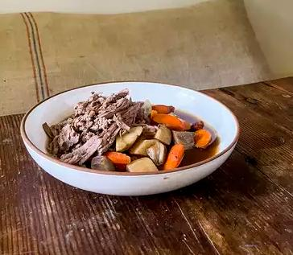

Pot Roast

Description
The gift that keeps on giving from the slow cooker.
Here's a standard homemade delicious pot roast recipe.
Ingredients
- Chuck roast
- Olive Oil
- Seasoning
- Soup Mix
- Water
- Vegetables: Carrots, potatoes, onions, & celery
Steps
- Season and sear the chuck roast.
- Place the ingredients in the slow cooker.
- Cook on Low for 8 to 10 hours.